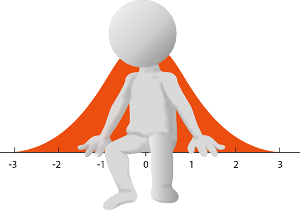

Dado um conjunto de valores, a tua tarefa é calcular a sua média (soma a dividir pela quantidade de valores) e a sua amplitude (diferença entre o valor máximo e o valor mínimo).O input é constituído por duas linhas. A primeira linha contém um único número N (2 ≤ N ≤ 1 000), que corresponde à quantidade de números a considerar. A segunda linha contém os N valores a considerar, separados por um espaço. Os valores são inteiros entre -1 000 000 e 1 000 000 (inclusive).
O output deve ser constituído por duas linhas. A primeira linha deve conter a média (com duas casas decimais) e a segunda linha deve conter a amplitude (um inteiro).
| Input | Output |
|---|---|
3 5 -2 1 |
1.33 7 |
| Input | Output |
|---|---|
9 7 1 9 2 8 3 6 4 5 |
5.00 8 |
Conteúdo de Fernando Silva (DCC/FCUP), migrado de dcc.fc.up.pt/~fds/aulas/EDados/2526/praticas/problems/prob183.html.